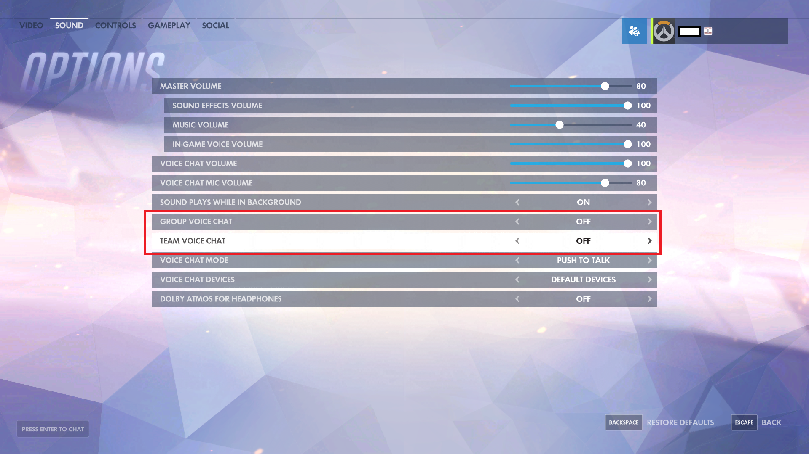
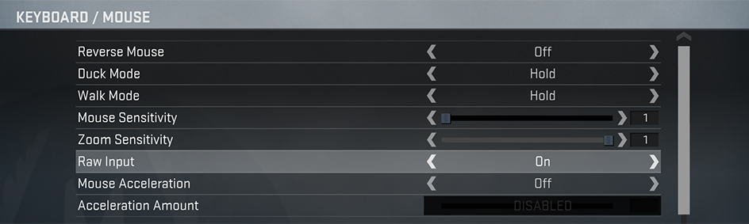
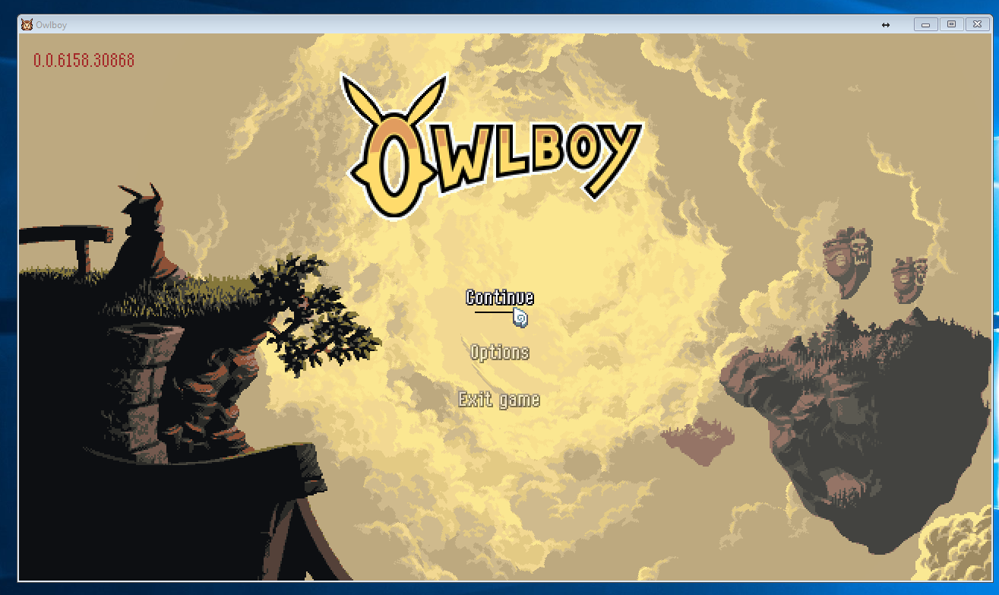

Why do we love games? Seems like a silly question but we'll list some of our resons
Computer games entertain us
When we sit alone in the dark, we can always log into our favorite game and talk to other humans or game characters
Games don't care how you feel or how you look, they are always there for you.
Games can tell deep and personal stories, or let you jump into instant action to forget about the stress of the day.
Other gamers will usually not care about how many friends you have, if you are getting picked on or your race; they'll play with you any how
Gaming for everyone.
As you can tell games are amazing and we genuinely believe that they improve the life quality of countless
people, everyone should share in the joy!
Since other gamers can't see you they judge you purely based on your skills, ignoring everything else. You
teammates don't care if you sit in a wheelchair or 2000$ gaming chair.
But all is not well with games today, while the gaming is for all the games are often not made with
accessibility in mind.
There have been great strives towards accessibility on the web, guidelines such as WCAG and preasure towards
accessible design has made the web a more inclusive and better place for all.
But there are no "wcag" for games, it is up to the game company if they want to make the game inclusive, and far
too often accessibility is being neglected.
We want games to be for everyone and made this website to use for all that make games, use games and review
games. We have compiled guidelines on how to make games more accessible
It is our hope that with this gamemakers can easily see what to do to make their games more accessible, and game
reviewers and buyers can start caring about accesibility when deciding what games to buy
Why should I care?
When we design with accessibility and universal design in mind we make our available to a wider audience.
Even if we fail to meet all the GCAG requirements and only skim the universal design guidelines meeting at least
some of them will make the product better
We believe that if we all try our best with the resources we have at hand to make our products as accessible
but still awesome as possible we can reach a wider audience;
a wider audience can use our produects and competitors become incentivize to follow in our accessible
footsteps, if only to reach a wide of an audience as we are.
The GCAG guidelines make accessibility in games easier, commercially sound and give a competitive edge to
making the world a better and more incluse place for all.
Consumers and reviewers can also use GCAG, buyers can choose to spend their money one inclusive games and game
reviewers can give games accessibility scores. The more people care the bigger the demand for accessible
products even from those that don't necessarily need them.
See the embedded YouTube-video for real life examples on how to make a game more accessible and why you
should care.
The guidelines
These guidelines are divided into sections based on our senses. Follow as many of them as possible.
Based on a AbleGamers Chartiy paper
and brannonz.com/accessibility/disabilities
these guidelines were heavily influenced by these sources and they deserve credit for their work.
Rule text based on the layout and text of the WCAG 2.0
rules
Visual
1.1 Color should never be used as the only visual means to convey information, indicating an action, prompting a response, or distinguishing a visual element.
1.2 It should be possible to adjust the darkness/brightness setting of the game
1.3 There should be settings to change menu fonts, subtitle font, font color, font size and subtitle location.
1.3.1 Location of text should be changeable and not restricted to corners or bottoms of screen to accommodate players with tunnel vision.
1.3.2 When displaying data with both text and color represesentation there should be an option to enable various color blind modes. See
types of color blindness
1.4 The game has solid and clear contrasts between colors, especially in menu and meny-like interfaces
1.5 Subtitles should be in or have the option to be in clear to see letterboxes
Auditory
2.1 No information needed for game progression should be solely represented by audio.
2.2 Speech and important sound events should be subtitled.
2.2.1 It should be easy to enable subtitles.
2.3 Audio events should include visual cues.
2.4 The game should provide separate audio controls for speech, music and audio effects.
2.5 Keep background noise low during in game speech
2.6 Visualize who is currently speaking and make it clear who is making noise if the noise maker is visible.
2.7 Provide text and voice chat for online games, have an ability to turn voice, text or both chats off and on

2.8 Visualize who can hear the voice chat and who has voice chat disabled
2.9 Let the user decide between stereo and mono audio
Motorskill
3.1 All keys used in game should be re-mappable and the game can auto-detect keys pressed when remapping.
3.2 The game supports multiple input devices.
3.4 All areas of the menu interface can be accessed using the same input methods as in the gameplay.
3.5 The game uses menues that are static and all cursor/touch menu like elements in the game are stationary unless moved by user.
3.6 The game supports windowed mode
3.7 The game does not require the user to input multiple simultaneous inputs or let the user solve these tasks in other ways.

Mobility
4.1 The game can be started without having to navigate multiple levels of menues.

4.2 Ensure large size and large spacing between on-screen controls and interactive elements.
4.3 The user can adjust the sensitivity of controls.
4.4 The game can move and resize user interface elements.
4.5 The player can move and re-size on screen information elements like HUD's and minimaps.
Universal design
This site is dedicated to accessibility we also wish to discuss universal design, following the accessibility
guidelines here will help you achieve greater universal design, but does not encompass all of universal design.
Even though we probably never will reach complete universal design, we should as game designer strive
towards as universal design as possible; and as consumer demand universal design in the products we buy.
A good way to measure universal design is by the 7 universal design principles, these can be taken into
consideration when making a game, used to measure existing games and used to improve existing games.
The guidelines can be read at
universaldesign.ie